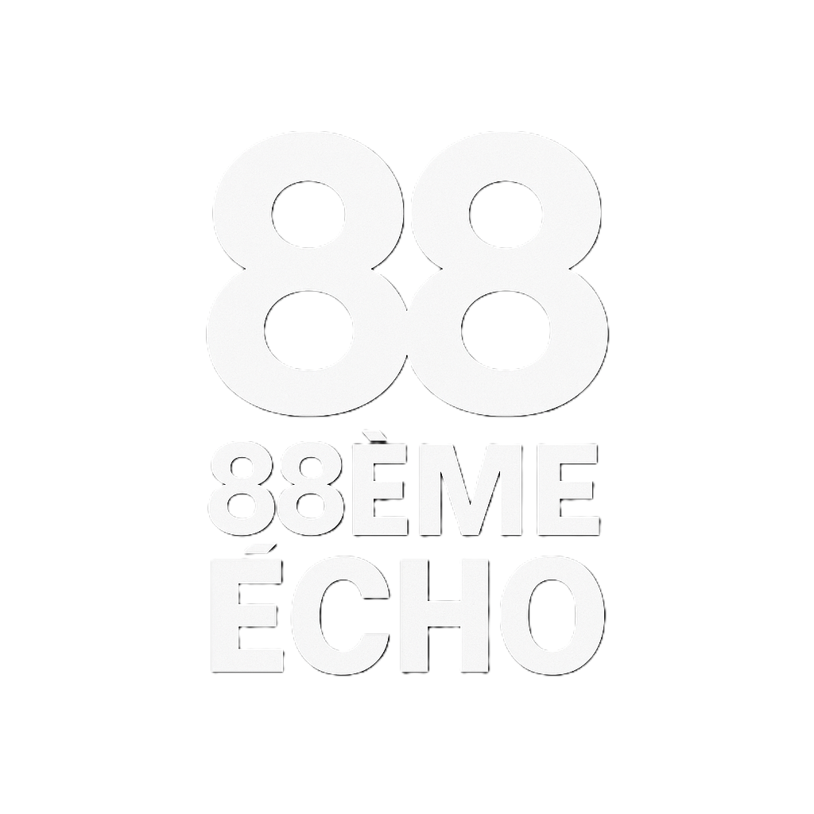

Veille continentale — structure de salle, pas de faits affirmés
Cartel principal. Une information, une provenance, une date. Qualité avant quantité.

Un musée vivant des mémoires africaines — archives, lacunes, et enquêtes à partir de sources vérifiables.
Plan documentaire · placeholder
Salle 01
Cartel principal. Une information, une provenance, une date. Qualité avant quantité.
Placeholder secondaire.
Placeholder secondaire.
Salle 02
L’absence de preuve n’est jamais une preuve. Ici le texte muséal accompagne l’image sans l’écraser.
Salle 03
Fonds A · provenance indiquée
Fonds B · lacune notée
Label obligatoire · fiche
Fonds C · date incertaine
Salle 04
Colonne principale pour l’analyse géopolitique — étiquetée, sourcée, jamais spéculative.
Salle 05
Mémoires en circulation
Placeholder
Placeholder
Placeholder
Salle 06
Les secondaires passent après le plan principal.